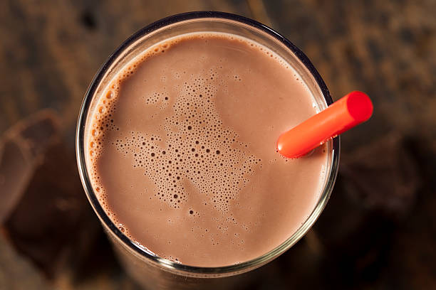
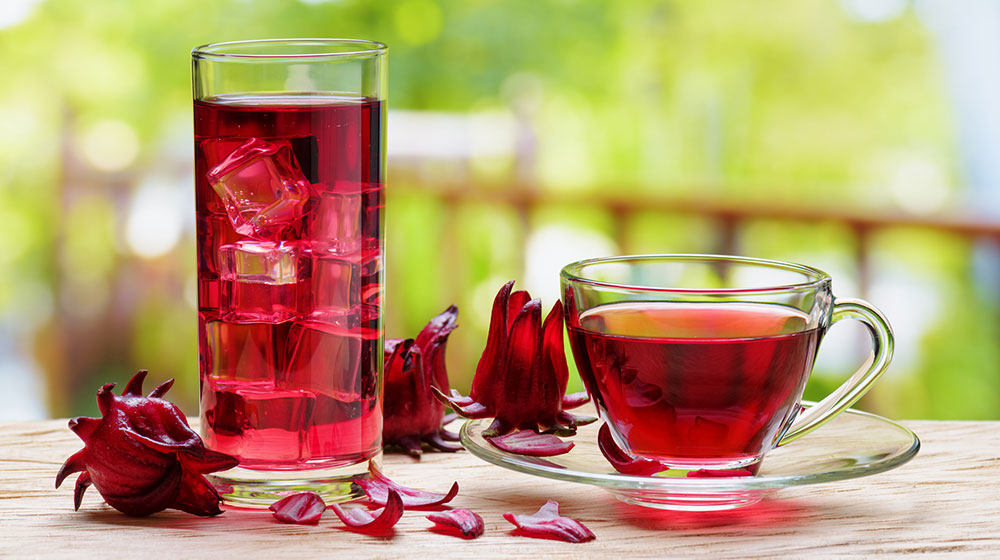
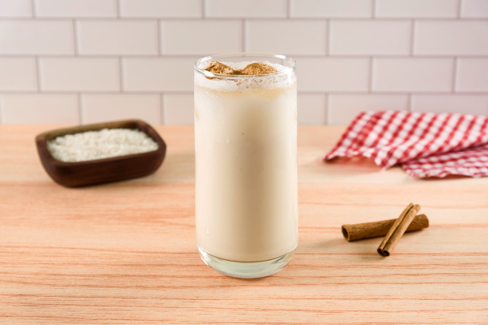

Choco Milk es un alimento en polvo fortificado para preparar una bebida sabor
a chocolate para complementar el desayuno de los pequeños. ... Un vaso de Choco
Milk contiene los nutrimentos necesarios para su día a día y un delicioso sabor chocolate.
la mejor que he probado es el de la picadita jarocha y esta barata asi que , recomiendo comprar ahi , ademas que lo rellenan con canela
Recomendación: Ismael Morales

2.
Agua de Jamaica
Cafeteria UV
Si tienes calor, y quiere tomar algo refrescante , el agua de jamaica es perfecta, ademas que lo venden en la mismisima uv,
Se trata de una infusión que se toma tanto fría como caliente en diversas partes del mundo. Tiene un sabor agrio, parecido al
del arándano, y se le suele añadir azúcar para endulzarlo
Recomendación: Victor Lopez

3.
Horchata
Cualquier Picadita Jarocha en Veracruz
El agua de horchata es una bebida dulce de aspecto lechoso, muy consumida en España, elaborada a partir de chufa,
un tubérculo perteneciente a la familia de las Ciperáceas, también conocidas como “juncias”. Las chufas son raíces pequeñas, de color amarronado, forma redonda y textura rugosa;
en apariencia similar a una avellana, de ahí que a esta especie se le conozca comúnmente como juncia avellanada.
Recomendación: Zaira Hernandez

4.
Agua simple
Cualquier Picadita Jarocha en Veracruz
El agua ayuda a regular la temperatura de tu cuerpo, especialmente durante el ejercicio, cuando empiezas a sudar .
El agua ayuda a que la sangre transporte oxígeno, y el nivel de energía aumenta cuando el cuerpo está bien hidratado.
Una hidratación adecuada ayuda a mantener lubricadas las articulaciones y los músculos.